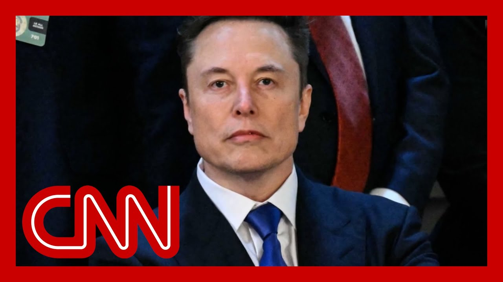

【CNN News 马斯克：如果特朗普法案通过，将开始组建新政党｜附文稿｜20250701】
Summary: The paragraph discusses the controversial "megabill" backed by President Trump, its potential impacts on Medicaid and national debt, Republican divisions, and Elon Musk's threat to oppose supporters of the bill.
摘要： 本段讨论了特朗普总统支持的争议性“巨额法案”对医疗补助和国家债务的潜在影响、共和党内部的分歧，以及埃隆·马斯克威胁反对该法案支持者的立场。

⏱️ Estimated Reading Time: 15 min
📚 六级生词 📚 雅思生词 📚 托福生词 📚 专八生词 📚 SAT生词 📚 考研生词 📚 GRE生词 📚 高考生词
We begin tonight with what President Trump calls his big, beautiful bill, which could be headed for a final vote in the Senate after a long day of debating amendments to it and perhaps for some Republican members staring into the abyss.
今晚我们首先关注特朗普总统所称的“庞大而美好”的法案，经过一整天对修正案的辩论后，该法案可能即将在参议院进行最终投票，而一些共和党成员或许正面临政治深渊。
Here's why.
原因如下。
Polling consistently shows it is strikingly unpopular with voters.
民调一致显示该法案极不受选民欢迎。
The Congressional Budget Office estimates it adds more than $3 trillion to the national debt and could deprive nearly 12 million Americans of health insurance through Medicaid.
国会预算办公室估计，该法案将使国家债务增加超过3万亿美元，并可能通过医疗补助剥夺近1200万美国人的医疗保险。
That in it now comes with a double dose of existential terror for Republicans on the fence.
这给犹豫不决的共和党人带来了双重生存恐惧。
On the one hand, the President over the weekend managed to drive one opponent of the bill out of seeking another term.
一方面，总统上周末成功迫使一名法案反对者放弃连任竞选。
On the other, Elon Musk has just weighed in on anyone voting.
另一方面，埃隆·马斯克刚刚对投票支持者发出警告。
Yes, quoting him now, every member of Congress who campaigned on reducing government spending and then immediately voted for the biggest debt increase in history should hang their head in shame.
引用他的话：“每位竞选时承诺减少政府支出，却立即投票支持历史上最大债务增加的国会议员都应羞愧低头。”
And if that weren't enough, he adds, and they will lose their primary next year if it is the last thing I do on this earth.
他还补充道：“如果这是我在地球上做的最后一件事，他们明年将在初选中失败。”
Now given that as Mars mission won't be ready to go for years, that's a lot of primaries.
考虑到火星任务多年内无法启动，这意味着许多初选将受影响。
But that's not all.
但这还不是全部。
He also reiterated his call from three weeks ago for a new political party and says he would start one a day after the bill passes.
他还重申了三周前成立新政党的呼吁，并表示将在法案通过次日启动。
Rock meets hard place.
进退两难。
Secretary of the United States, Dr. Carolinas Tom Tillis, chose the Rock announcing that he will not seek another term and he slammed the President on the bill's Medicaid cuts.
美国参议员汤姆·提利斯选择退出连任竞选，并抨击总统削减医疗补助的计划。
What do I tell 663,000 people in two years or three years when President Trump breaks his promise by pushing them off of Medicaid because the funding is not there anymore.
“当两三年后特朗普总统因资金短缺违背承诺，将66.3万人踢出医疗补助时，我该如何向他们交代？”
It is inescapable that this bill and its current form will betray the very promise that Donald J. Trump made in the Oval Office.
“该法案当前形式必将背叛特朗普在椭圆形办公室作出的承诺。”
So today White House Press Secretary Caroline Levit said that Senator Tillis is in these or her words just wrong.
今日白宫新闻秘书卡罗琳·莱维特称提利斯参议员“完全错误”。
But listen to what the President has been saying on the subject going back a decade and decide for yourself.
但请回顾总统十年来对此议题的言论并自行判断。
We've Medicare, Medicaid and Social Security without cuts. Have to do it.
“我们必须保持医疗保险、医疗补助和社会保障不受削减。”
We're going to love and cherish Social Security, Medicare, Medicaid.
“我们将珍视社会保障、医疗保险和医疗补助。”
We're not going to do anything with that.
“我们不会对此采取任何行动。”
Can you guarantee that Medicare, Medicaid, Social Security will not be touched?
“您能保证不触动这些项目吗？”
Yeah, I mean, I have said it so many times, you shouldn't be asking me that question.
“我已反复强调，你们不该再问这个问题。”
What happens if it comes to your desk?
“若相关法案提交至您面前呢？”
Has the tax cuts but also cuts to Medicaid?
“包含减税但削减医疗补助的法案？”
Would you veto that?
“您会否决吗？”
Well, we're not doing that.
“我们不会那样做。”
We're not doing that.
“我们不会那样做。”
We're not doing that.
“我们不会那样做。”
We're not doing that.
“我们不会那样做。”
We're not doing that.
“我们不会那样做。”
We're not doing that.
“我们不会那样做。”
We're not doing that.
“我们不会那样做。”
We're not doing that.
“我们不会那样做。”
We're not doing that.
“我们不会那样做。”
I would if they were cutting it, but they're not cutting it.
“若他们削减我会否决，但他们没有。”
We're not cutting Medicaid.
“我们不会削减医疗补助。”
We're not cutting Medicare.
“我们不会削减医疗保险。”
A lot to get to tonight seen in Chief White House correspondent Caitlin Collins starts us off.
今晚内容繁多，白宫首席记者凯特琳·柯林斯首先为我们报道。
Caitlin, how concerned is the White House about potential cracks in the Republican coalition?
凯特琳，白宫对共和党联盟潜在分裂有多担忧？
I mean, they're watching all of this and watching Senator Tom Tillis, you know, in that scathing floor speech on Sunday, John.
约翰，他们正密切关注这一切，包括参议员汤姆·提利斯周日激烈的议院演讲。
But then of course, after he announced that he was not going to be seeking re-election, the president was cheerleading that and saying essentially good riddance to Tom Tillis, given they believe he's been a thorn in their side during all of this.
当然，在他宣布不寻求连任后，总统对此表示欢呼，认为提利斯是“甩掉麻烦”，因他们认为其一直是阻碍。
And John, obviously, when they look at this overall, and I've been talking to White House officials about what they think is ultimately going to happen here, they do think this will pass.
约翰，白宫官员认为尽管存在分歧，该法案最终仍会通过。
They don't think Republicans are going to defy the president on his signature legislation as big and sweeping as it is.
他们认为共和党人不会在总统标志性立法上违抗其意愿。
And with those potential cuts, the question is how long it's going to take to get this through, to get this done.
关键在于这些潜在削减条款会使通过过程耗时多久。
And that's what they've been watching, obviously, very closely at the White House.
白宫正紧密关注这一进程。
But with Senator Tillis there, as he's coming out and he's saying that the president is being misinformed by his advisors on what is actually in this bill and that it's going to make him essentially go back on the promises that you just heard him say there about not interfering with people's Medicaid benefits.
提利斯参议员指出总统被顾问误导法案内容，这将使其违背不干涉医疗补助的承诺。
I mean, the White House is just flatly rejecting that and arguing that it's wrong.
白宫断然否认这一说法，坚称其错误。
But I think you have to look at, you know, with Tillis' decision yesterday to say he's not going to be seeking reelection, he doesn't really have a lot to lose here in terms of why he is speaking out and why he is saying that or any incentive to say something that he doesn't actually think could put Republicans in peril.
但提利斯放弃连任后无所顾忌，其言论可能使共和党陷入危机。
And so that is something they're watching, obviously, closely at the White House.
白宫正严密关注此动态。
They just essentially want to get this passed.
他们核心目标是推动法案通过。
They want to be able to talk about tax cuts and have that as something that they are trumpeting.
希望将减税作为政绩宣扬。
And you're seeing how the president is working on this in terms of writing scathing truth social posts of people who are disagreeing with him and also taking senators out for golfing trips, calling them up on the phone and chatting with them as this slog right now on Capitol Hill is happening with all these amendments that they are trying to get passed.
总统通过社交媒体抨击反对者，同时以高尔夫邀约和电话沟通游说参议员，推动修正案通过。
None of them so far have gotten passed.
目前尚无修正案获得通过。
Well, speaking of people who disagree with him, Elon Musk came out with a new slash old threat today saying he would primary or, you know, push to primary any lawmakers who support this bill.
谈及反对者，埃隆·马斯克今日重申将支持初选挑战该法案支持者。
Let's split again with the president.
再看总统方面。
How does the White House view this?
白宫如何看待此事？
Well, it's interesting because a few White House officials were surprised that he came out today and said this given he had gone largely quiet on his criticisms of the president and of legislation that he's trying to get passed.
有趣的是，部分白宫官员对其突然发声感到意外，因马斯克此前已减少对总统及立法的批评。
He had actually come out and said he regretted some of the things he said about Trump when they were sniping back and forth at one another previously.
他曾表示后悔此前与特朗普的言语交锋。
And so now to look at this, what he's saying, I mean, he's going after this and saying Democrats and Republicans are both in the wrong here.
如今他指责民主共和两党均应对此负责。
A new political party needs to be formed that all of Washington, he says, is an agreement more than they are in disagreement.
他认为需成立新政党，因华盛顿共识多于分歧。
And starting to primary Republicans who vote yes on this, obviously John, that is a lot of Republicans who are likely expected to vote yes on this, that he's saying that he would be going after.
他将针对支持该法案的众多共和党人发起初选挑战。
But he's essentially trying to highlight what he says is the criticism of Republicans who complain about big spending in Washington and then are about to vote on this given the estimates that we've seen, including from the budget office this weekend of just how much this is going to add to the deficit.
他旨在揭露共和党人一边批评政府开支，一边支持增加巨额赤字法案的矛盾。
Yeah, that's a lot of primaries.
这将涉及大量初选。
He'd better have deep pockets.
他最好资金雄厚。
Caitlin Collins, thank you very much.
非常感谢凯特琳·柯林斯。
And of course, you've enjoyed Caitlin at the top of the hour for the source.
您可在整点新闻继续收看凯特琳的报道。
She's going to speak to Senator Elizabeth Warren tonight.
她今晚将采访参议员伊丽莎白·沃伦。
Right now, let's bring in Democratic Senator Richard Blumenthal of Connecticut.
现在连线康涅狄格州民主党参议员理查德·布卢门撒尔。
He's on the Armed Services and Judiciary Committee.
他任职于军事与司法委员会。
Senator, nice to see you.
参议员，很高兴见到您。
Any prediction on what will happen tonight and what time?
对今晚表决结果和时间有何预测？
Certainly, I have no prediction on time.
时间上难以预测。
And I've just come from the center floor.
我刚从议院回来。
There's a real question about whether they have the votes.
他们是否掌握足够票数尚存疑问。
They are really struggling because they face this dilemma of making $4.5 trillion in tax cuts, which require them to make slashing cuts in Medicaid, in nutrition programs, in aid to veterans and student loans, and much, much more, which will have really drastic effects on their constituents.
共和党陷入困境：4.5万亿美元减税需通过大幅削减医疗补助、营养计划、退伍军人和学生贷款援助等实现，这将严重影响选民利益。
So right now, they're engaged in this horse trading kind of process, providing exemptions or exceptions for parts of populations in certain states trying to get their approval with earmarks, as they used to be known.
目前他们正进行政治交易，通过为特定州群体提供豁免条款换取支持。
And the reason they're struggling is that the American people get it.
挣扎的原因在于美国民众已识破其本质。
That's why two to one, they disapprove of this bill.
因此该法案反对率达支持率的两倍。
The tax cuts for the billionaires of $4.5 trillion are absolutely necessary.
“为亿万富翁减税4.5万亿美元绝对必要”
Ballooning national debt by $3.3 trillion.
“使国债膨胀3.3万亿美元”
Absolutely, absolutely, abhorrent.
“完全令人憎恶。”
And so I think that they're going to be struggling for the better part of this evening, maybe into tomorrow morning or later.
预计今晚乃至明晨他们都将继续艰难博弈。
What does Senator Tillis, his announcement that he won't seek re-election?
提利斯宣布不连任说明了什么？
What does that tell you?
您有何看法？
What it tells me is that any Republican who stands up to Donald Trump will be hit by this torrent of vitriol and vehement threats and intimidation.
这表明任何对抗特朗普的共和党人都将遭遇猛烈攻击与恐吓。
And so Donald Trump is running this show.
特朗普主导着局势。
He is betraying not only his own promises, but the values and promises that Republicans have made to their constituents.
他不仅背弃个人承诺，更背叛共和党对选民的价值观承诺。
And what Tillis' decision tells me is their positions in many ways have become unsustainable, both politically and morally.
提利斯的决定反映共和党立场在政治和道德上均难以为继。
How does it feel to be aligned with Elon Musk tonight, who also opposes this bill, and what difference do you think that his speaking out today will make?
与马斯克立场一致感受如何？他的发声会产生什么影响？
Well, let me just say, Elon Musk or I are not coordinating our public positions, but I think he has it right.
我们虽未协调立场，但他的观点正确。
And the numbers tell the story, not only the debt that will balloon and the real suffering that people will see in their everyday lives, kids who break their arms on playgrounds or women who find a lump in their breast, and they go to the emergency room.
数据说明一切：债务膨胀将导致民众实际痛苦，如儿童骨折或女性乳腺肿块患者无法获得急诊。
They're uncovered.
他们失去保障。
Seniors who are kicked out of nursing homes, the pain is undeniable.
老人被赶出养老院的痛苦无可否认。
And Elon Musk may not feel or see that pain, but top line, he knows the financial markets are going to begin reacting to the levels of debt that will be generated.
马斯克或许感受不到这种痛苦，但他清楚金融市场将对债务水平作出反应。
The economy is at risk.
经济面临风险。
The ramifications and ripple effects throughout the economy will be terrible.
经济领域的连锁反应将十分可怕。
And I will just say one more thing, John.
约翰，我还想补充一点。
You know, the Republicans have corrupted this democratic process.
共和党已腐蚀民主程序。
They have in effect relied on an accounting trip trick.
他们依赖会计手段的诡计。
It is called baseline budgeting and the baseline current policy that enables them to disguise a part of the effect on national debt.
所谓“基线预算”和“现行政策基线”掩盖了对国债的实际影响。
So this reliance on accounting tricks on corrupting the reconciliation process, which was designed only for budgeting, they're adding all kinds of policy restrictions.
这种对预算调节程序的滥用本仅用于预算，现却被加入各种政策限制。
I think we'll be seen by the American people as fundamentally destructive of the democratic process.
美国民众将视其根本上破坏民主进程。
We will see.
我们拭目以待。
Certainly, maybe see what happens in the Senate sometime.
当然，或许很快能看到参议院结果。
Tonight, Senator Blumethal, thank you so much for your time.
布卢门撒尔参议员，感谢您今晚的时间。